Reinforcement Learning
and its interesting applications
Created by Jiali Duan on Oct.10, 2018
What's reinforcement learning?
End-to-end learning for Sequential Decision Making
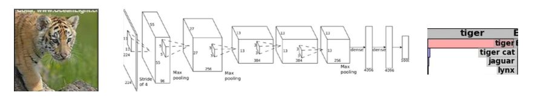
What does end-to-end mean for
Sequential Decision Making?
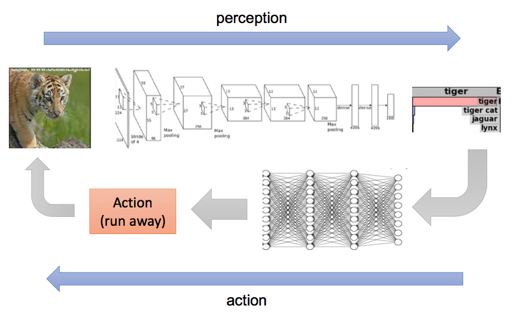
More formally!
Comparison with deep learning framework
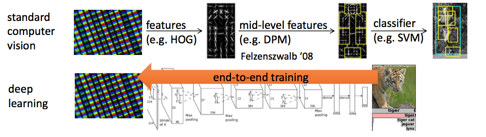

Short Summary (DRL)
- RL originates from the need for sequential decision making process
- DL is analogous to one state of the "sequence"
- DL allows RL to solve complex problems end-to-end
Why do we care about it now?

Mathematical Definitions

The goal of reinforcement learning

Toy Examples
- Value-based: Indirectly optimize policy via estimation of value function
- Policy gradients: Directly optimize policy by calulating gradient of policy
- Actor-critic: Combination of above two
Value Iteration

$V^{*}_{k}(s)\leftarrow max_{a}\sum_{s'}P(s'|s,a)(R(s,a,s')+\gamma V^{*}_{k-1}(s))$
$\pi_{k}^{*}(s)\leftarrow argmax_{a}V^{*}_{k}(s)$
Policy Gradients

Policy Gradients
$ U( \theta )=E[ \sum_{t=0}^{H}R(s_{t},u_{t});\pi_{\theta}]=\sum_{ \tau }P(\tau;\theta)R(\tau)$
$\bigtriangledown _{\theta}U( \theta )= \bigtriangledown _{\theta}\sum_{ \tau }P(\tau;\theta)R(\tau)=\sum_{ \tau }\bigtriangledown _{\theta}P(\tau;\theta)R(\tau) $ $ =\sum_{ \tau }\frac{P(\tau;\theta) }{P(\tau;\theta) } \bigtriangledown _{\theta}P(\tau;\theta)R(\tau) $ $=\sum_{ \tau }P(\tau;\theta)\frac{\bigtriangledown _{\theta}P(\tau;\theta) }{P(\tau;\theta) }R(\tau) $ $ =\sum_{ \tau }P(\tau;\theta)\bigtriangledown _{\theta}logP(\tau;\theta)R(\tau) $ $= \frac{1}{m} \sum_{i=1}^{m}\bigtriangledown _{\theta}logP(\tau^{(i)};\theta)R(\tau^{(i)})$
Policy Gradients
# Given:
# actions - (N*T) x Da tensor of actions
# states - (N*T) x Ds tensor of states
# q_values – (N*T) x 1 tensor of estimated state-action values
# Build the graph:
logits = policy.predictions(states) # This should return (N*T) x Da tensor of action logits
negative_likelihoods = tf.nn.softmax_cross_entropy_with_logits(labels=actions, logits=logits)
weighted_negative_likelihoods = tf.multiply(negative_likelihoods, rewards)
loss = tf.reduce_mean(weighted_negative_likelihoods)
gradients = loss.gradients(loss, variables)
$\frac{1}{m}\sum_{i=1}^{m}\sum_{t=1}^{T}\bigtriangledown _{\theta}log(\pi_{a_{i,t}}|s_{i,t};\theta)\widehat{R_{i,t}}$
Actor Critic

What have we come so far?

Getting Serious
Look Before You Leap: Bridging Model-Free and Model-Based Reinforcement Learning for Planned-Ahead Vision-and-Language Navigation
- Model-free methods lacks generalization ability
- Propose to augment "imagination" via a look-ahead policy module
- Integrate vision with language instruction for indoor navigation
Task description

Components


# Recurrent policy model
e(t,i)=tf.matmul(h(t-1).transpose(),w(i))
a(t,i)=tf.exp(e(t,i))/tf.reduce_sum(tf.exp(e(t,k)), axis=1)
c(t)=tf.reduce_sum(a(t,i)*w(i))
h(t)=LSTM(h(t-1),[c(t),s(t),a(t-1)])
# Environment model
s(t+1)=fransition(fproj(st,at))
r(t+1)=freward(fproj(st,at))
Model Pipeline
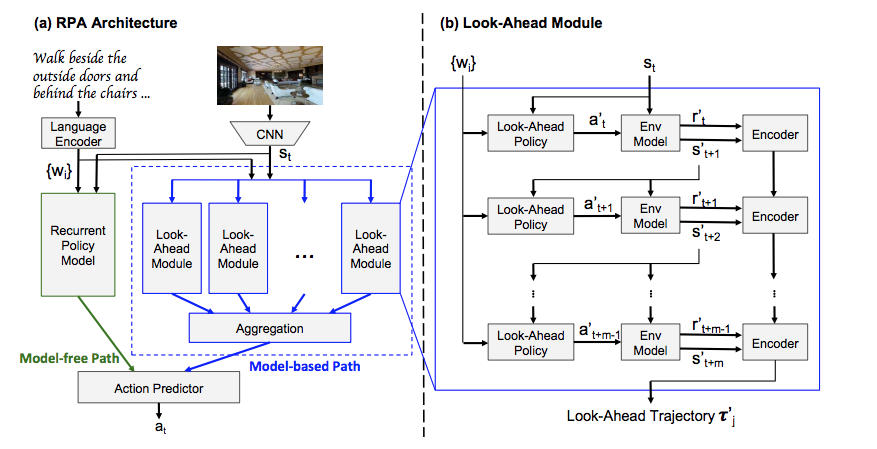
Model Learning
- Pretrain environment model with immitation
- Freeze environment model and train policy model
# Immitation learning
Train environment model with Randomized teacher poclicy;
Pick demonstration policy with P=0.95;
Pick Bernouli Meta policy with P=0.05;
l_transition=E[s'(t+1)-s(t+1)]
l_reward=E[r'(t+1)-r(t+1)]
# Policy learning
r(st,at)=distance(s(t))-distance(s(t+1))
R(st,at)=discounted total sum of r
Perform REINFORCE algorithm on R
Result
- Trajectory length
- Navigation error (distance(vT, destination))
- Success rate (navigation error < 3m)
- Oracle success rate (min distance(vk, destination) < 3m)
Evaluation Metrics:
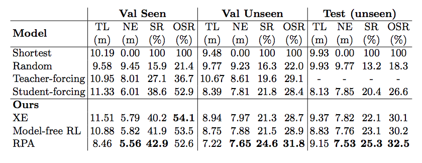
My current work
- Modularize unified RL interface for benchmarking important ideas
- Parallelize RL codebase for faster iteration
- Try new ideas on indoor navigation
Benchmarking Efforts
- Verify code correctness
- Building blocks
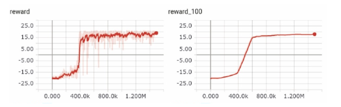

Vanilla DQN & 2-step unrolling DQN;
Advanced DQNs
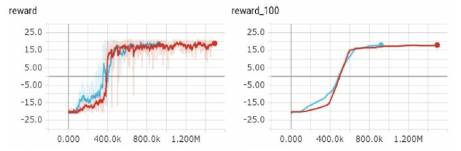 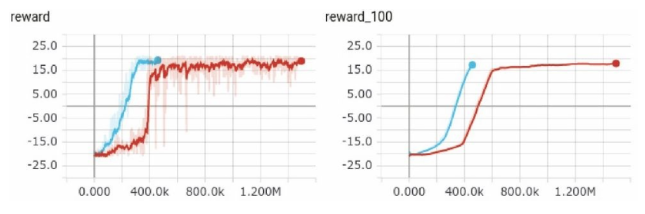
Double DQN & duelling DQN;
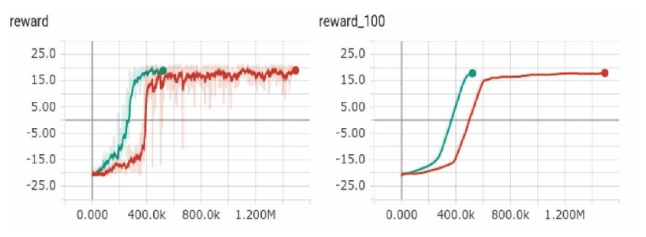
Prioritized Experience Replay;
Policy-based methods and its variance
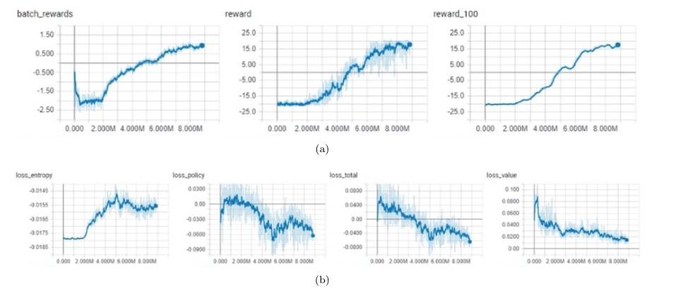
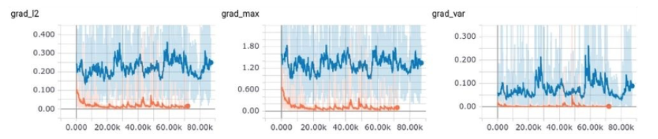
Parallelization
- Data Parallelism
- Gradient Parallelism
 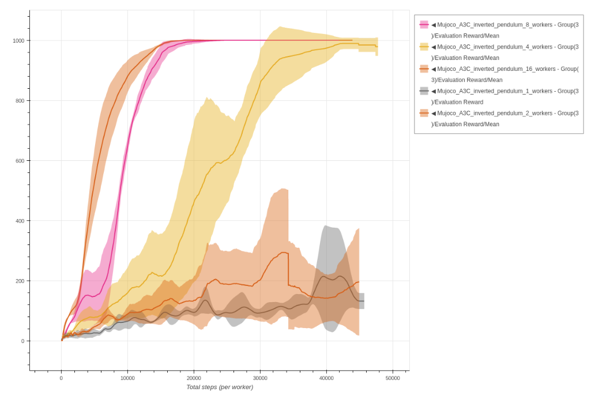
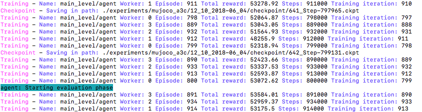
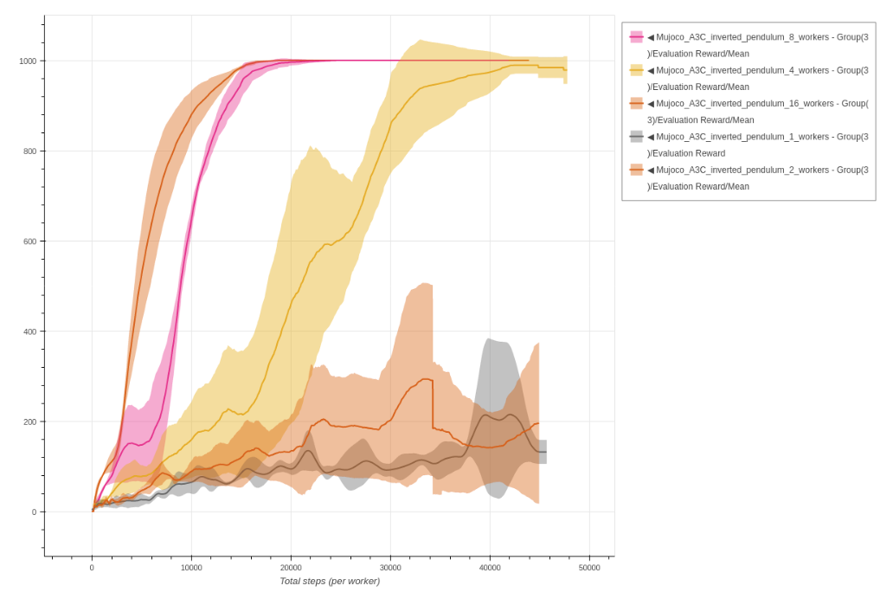
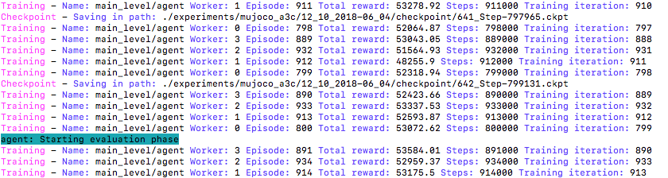
Develop new ideas
Examples
- Improve sample efficiency
- Develop explorative agents
- Consider tasks with sparse rewards
- Multi-agent communication
THE END
- DRL is a fast-developing research area
- DRL is challenging
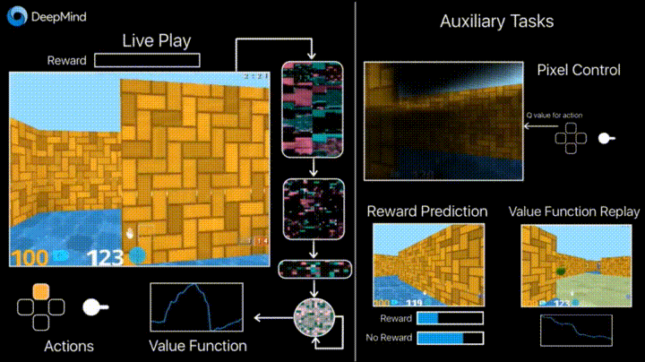